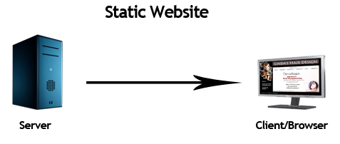
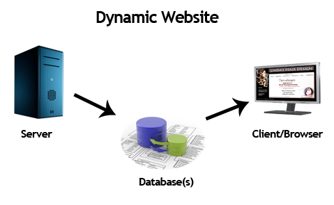
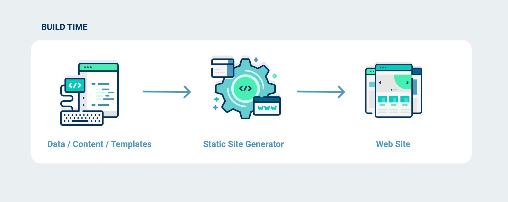
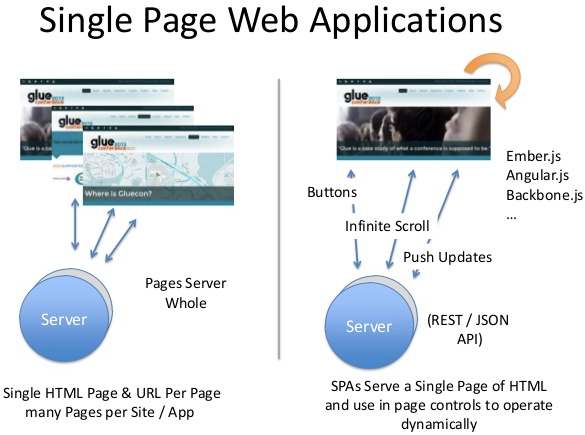

Weather App
30 Years of Web Development and

Presentation Outline
- 3 major inflection points on changing web dev
- Weather app show and tell
- Deployment with Netlify
- Summary
To Understand JAMstack's Role in Today's Web Dev
- Take a look at the history of web dev
- Understand how we got here
- Recognize forces shaping web dev that produce
First Major Inflection Point
Web Development in Early 1990s
Web Development Was Simpler in 1990s
- The web initially created as doc mgmt system
- Hand coded in HTML containing links to other pages
- Did not have multimedia support
Second Major Inflection Point
Web Development since Mid 1990s
Web Development Changing
- Pages were now being generated dynamically by programming languages
- Would require app server or language runtime, producing dynamic web pages
- With dynamic sites, servers would get content from databases and render web pages in real-time for each user, instead of building html pages ahead of time
Examples of Dynamic Sites
Amazon in 1994

Yahoo in 1994
There Were New Tools on Client Side
- Cookies in 1994
- JavaScript in 1995
- DHTML in 1997: Use of JS to change look of page - showing/hiding elements, animations
- AJAX in 2006: Use of JS to retrieve and send data in background without page reloading
There Were New Backends Tools As Well
- New Content Management Systems (CMS) and blogging software
- Examples of CMS: LiveJournal in 1999, Blogger in 1999, MoveableType in 2001, Drupal in 2001, MediaWiki in 2001, WordPress in 2003, Joomla in 2005, Magento in 2009
Advantages and Disadvantages of Dynamic Sites
| Pros | Cons |
|---|---|
| Content is updated in real time | More software, more complexity, more maintenance |
| Content can be customized for each user |
Third Major Inflection Point


Web Development since Mid 2000s
Web Development Changing Again
Developers demand faster dev and deployment speed
Leads to rise of Modern Static Site Generators, SSGs
- Scripts that would take content stored in format like XML and apply template to that content to build static html files
- Has existed since the 1990s (MovableType)
- Popular in 2000s due to lightweight markup languages: reStructuredText in '02, Textile in '02, markDown in '04
- Examples: Jekyll in '08, Pelican in '10, Hugo in '13
Advantages and Disadvantages of SSGs
| Pros | Cons |
|---|---|
| Simple; less software, less complexity | Limitation on number of authors |
| Limitation on amount of content |
Not Just SSGs, Single Page Apps Become Popular, too
- Most of HTML is rendered in browser, not in server
- Data can be fetched asynchronously via API calls
- Decoupled from back-end
- Flat file web sofware
- Examples of JS frameworks used for SPAs: Angular, 2010; EmberJS, 2011; React, 2013; VueJS, 2014
Advantages and Disadvantages of Single Page Apps
| Pros | Cons |
|---|---|
| Decoupled; separation of concerns | Asking for more from the browser; problems for low-end phones, battery-life on mobile |
| Easy to host; only need a web server |
In Mid 2010s, as Tech Matures, We Have Jamstack

Best of all worlds
It has improved dev and deployment speed
It has robustness of dynamic sites
It has service-oriented feature offered by SPAs
Weather App: Jamstack Show and Tell
Jamstack Deployment
Are there other projects that Netlify can be used?
Summary
- Web dev is constantly changing
- Web dev was simpler in 1990s
- Web dev became more complicated in mid 2000s
- New tools, e.g. Jamstack, became popular recently
- Simplified process for developers to create and deploy apps, while maintaining benefits of having dynamic sites